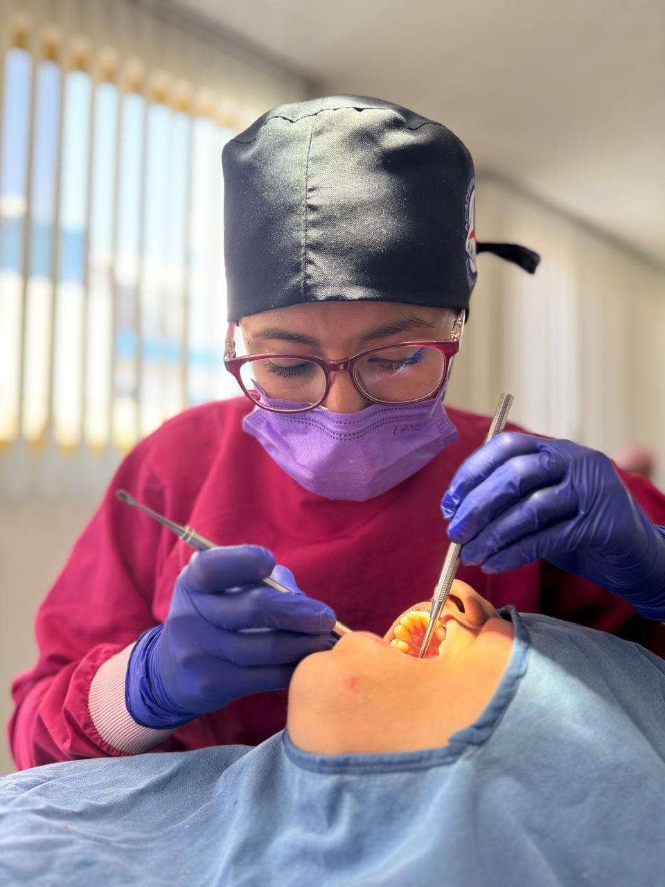

Especialista en endoperiodoncia: trato el interior del diente y la encía que lo rodea, para resolver el dolor y proteger tu sonrisa a largo plazo.
Te respondo directamente para valorar la urgencia sin perder el tiempo.
La endoperiodoncia combina dos especialidades en una sola consulta: el interior del diente y los tejidos que lo sostienen. Así ataco el problema de raíz, en lugar de solo calmar el síntoma.
Trato el interior del diente para eliminar el dolor de raíz y evitar que pierdas la pieza.
Cuando el dolor viene de adentro, no basta con calmarlo: hay que resolverlo. Así conservas tu diente natural en vez de reemplazarlo, y sigues sonriendo con lo que ya es tuyo.
Cuido la encía y el hueso que sostienen tus dientes, para que la solución sea duradera.
Un diente sano necesita una base sana. Cuidar tu encía y tu hueso evita que el tratamiento se eche a perder con el tiempo, para que lo que arreglo hoy te dure toda la vida.

Atiendo pocos pacientes a la vez porque quiero conocer tu caso de verdad, no solo tu expediente. Cuando llegas, empiezo por un diagnóstico claro: qué tienes, por qué duele y qué opciones tienes. Yo misma te acompaño en cada cita y en el seguimiento después del tratamiento, para que sepas que hay alguien pendiente de tu recuperación.
Entre más tiempo pase, más complicado puede ser el tratamiento. Escríbeme y te digo cómo resolverlo.
Escríbeme por WhatsApp